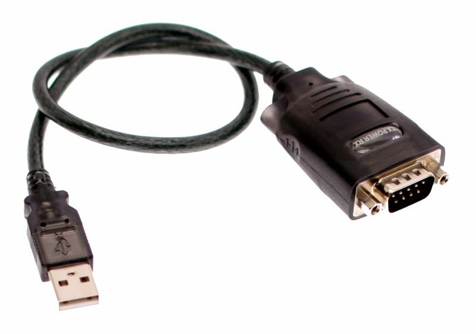
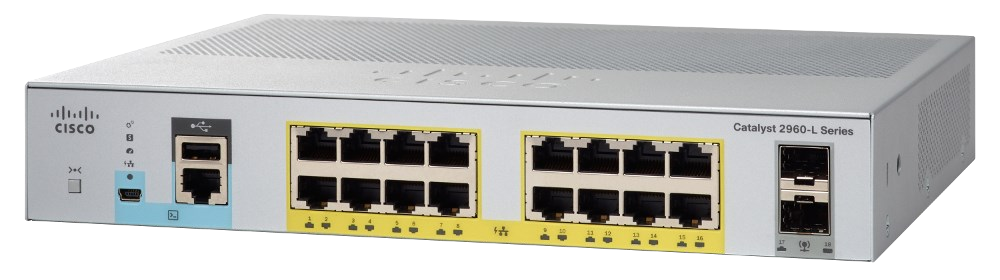
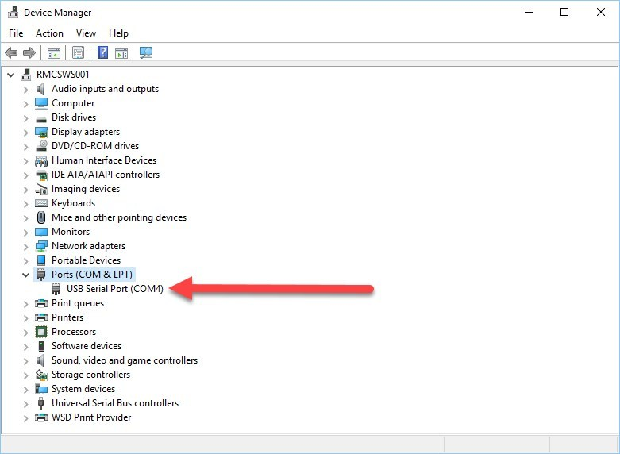
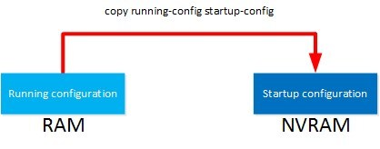

Unit 2: Network Fundamentalsالوحدة الثانية: أساسيات الشبكات
Introduction to Cisco IOS CLI (Command-Line Interface)
Mastering terminal emulation, console connections, CLI modes, and navigation shortcutsاحتراف الاتصال بالكونسول، أوضاع الـ CLI، وإدارة إعدادات أجهزة سيسكو
Quick recap quizاختبار مراجعة سريع
Connecting via Console & Terminal Emulatorالاتصال بجهاز سيسكو عبر منفذ الكونسول وبرامج المحاكاة
SOURCE MATERIALالنص الأصلي من المرجع
Most Cisco network devices (including routers and switches) use a CLI (Command-Line Interface) for configuration and management. The CLI is a text-based interface where you type commands to configure features or use
show commands to verify and troubleshoot device operations.أغلب أجهزة سيسكو (الروترات والسويتشات) بتعتمد على CLICommand-Line Interface — واجهة السطر البرمجي للضبط والإدارة. الـ CLI هي واجهة نصية بتكتب فيها الأوامر لإعداد وتفعيل الخصائص، أو بتستخدم أوامر
show لفحص واستكشاف أخطاء الشبكة.Console Cabling: When a device is fresh out of the box with no IP configuration, you cannot connect over the network (SSH/Telnet). You must establish an out-of-band physical connection using the Console Port (colored in light cyan/blue). Older devices use an RJ-45 console port paired with a light blue rollover cable (RJ-45 to DB9 serial or USB adapter). Modern Cisco switches also feature a mini-USB or micro-USB console port.
كابل الكونسول (Console Cabling): لما الجهاز يكون جديد وخارج من كرتونته بدون أي إعدادات IP، مش هتقدر تتصل بيه عبر الشبكة (بـ SSH أو Telnet). لازم تعمل اتصال فيزيائي مباشر عبر منفذ الكونسول (Console Port) اللي لونه أزرق سماوي. الأجهزة بتستخدم منفذ RJ-45 مع كابل كونسول أزرق (Rollover Cable) بينتهي بـ DB9 serial أو USB، والأجهزة الحديثة فيها كمان منفذ mini-USB أو micro-USB.
Engineer Laptop
Running PuTTY / Tera Term
Running PuTTY / Tera Term
← Light Blue Rollover / USB Cable →
Serial: 9600-8-N-1
Serial: 9600-8-N-1
Cisco Switch / Router
[Console Port (RJ45 / USB)]
[Console Port (RJ45 / USB)]
Out-of-Band Management via Console Cableالاتصال المباشر لإدارة الأجهزة عبر كابل الكونسول

🖼️ Cisco Switch Console Connectors

🖼️ Cisco Rollover Cable
Terminal Emulator Settings: To connect via serial port using tools like PuTTY, Tera Term, or SecureCRT, you must configure the exact serial parameters required by Cisco IOS:
إعدادات برامج المحاكاة (Terminal Emulator): عشان تفتح شاشة الكونسول ببرامج زي PuTTY أو SecureCRT، لازم تضبط إعدادات الاتصال التسلسلي (Serial) القياسية لأجهزة سيسكو:

🖼️ PuTTY Serial Settings
| Serial Parameterخاصية الاتصال | Standard Cisco Valueالقيمة القياسية في سيسكو | Descriptionالوصف والوظيفة |
|---|---|---|
| Baud Rate (Speed) | 9600 bps | Speed of data transmission over serial lineسرعة نقل البيانات عبر الكابل التسلسلي |
| Data Bits | 8 | Number of data bits in each characterعدد بتات البيانات لكل حرف |
| Parity | None (N) | No parity bit used for error checkingعدم استخدام بت تطابق |
| Stop Bits | 1 | Single stop bit marking character endبت توقف واحد يشير لنهاية الحرف |
| Flow Control | None | No hardware/software flow controlبدون تحكم في تدفق الإشارة |
First Boot & POST: When a switch or router powers on, it executes the POST (Power-On Self-Test) to verify CPU, DRAM, flash memory, and interface ASICs. Once POST passes successfully, the bootloader loads the Cisco IOS software image into RAM, presents licensing information, and initiates the CLI prompt.
بدء التشغيل واختبار POST: لما تشغل الراوتر أو السويتش، بيبدأ باختبار الفحص الذاتي {T('POST', 'Power-On Self-Test — فحص عتاد الجهاز عند التشغيل')} للتحقق من المعالج والذاكرة والمنافذ. بعد نجاح الاختبار، بيتم تحميل نظام تشغيل سيسكو (IOS) من الفلاش إلى ذاكرة الـ RAM، وتظهر شاشة البداية.
AUTHOR NOTEملاحظة إضافية للتوضيح
Crucial Exam & Practical Tip (9600 8-N-1): Always memorize '9600, 8, None, 1, None'. If you connect to a Cisco switch and see weird unreadable gibberish characters (like #@), the baud rate on your terminal emulator doesn't match the switch! Change the baud rate in PuTTY until clear English text appears.
نصيحة عملية هامة جداً (9600 8-N-1): احفظ المعادلة دي صم. لو وصلت كابل الكونسول وفتحت PuTTY ولقيت طالعلك رموز غريبة وغير مفهومة (زي #@)، ده معناه فوراً إن سرعة الـ Baud Rate في البرنامج مش متطابقة مع سرعة السويتش! غير السرعة في PuTTY لحد ما الكلام يظهر إنجليزي سليم ومقروء.
Cisco IOS Modes & Navigation Hierarchyأوضاع ومستويات أوامر سيسكو والتنقل بينها
SOURCE MATERIALالنص الأصلي من المرجع
Cisco IOS is organized into a hierarchical structure of command modes. Each mode has its own distinct prompt, access privileges, and set of available commands:
أوامر سيسكو متقسمة لهيكل هرمي من الأوضاع (Modes). كل وضع ليه علامة مميزة (Prompt)، وصلاحيات معينة، ومجموعة أوامر خاصة بيه:
1. User EXEC Mode:
Basic view-only monitoring (ping, traceroute, limited show). No config changes allowed.
Switch>Basic view-only monitoring (ping, traceroute, limited show). No config changes allowed.
↓ type: enable | type: disable ↑
2. Privileged EXEC Mode (Enable Mode):
Full viewing and maintenance (all show commands, debug, copy, erase, reload).
Switch#Full viewing and maintenance (all show commands, debug, copy, erase, reload).
↓ type: configure terminal | type: exit / end ↑
3. Global Configuration Mode:
System-wide changes (hostname, banner, domain name, routing protocols).
Switch(config)#System-wide changes (hostname, banner, domain name, routing protocols).
↓ enter specific sub-modes ↓
Interface Mode:
Switch(config-if)#Line Mode:
Switch(config-line)#Router Mode:
Switch(config-router)#Hierarchical Navigation of Cisco IOS Modesالهيكل الهرمي للتنقل بين أوضاع تشغيل سيسكو
Navigating Between Modes: Here is how you move up and down through the hierarchy in practice:
طريقة التنقل عملياً بين الأوضاع: ده مثال حي للتنقل بين المستويات المختلفة:
Switch> enable
Switch# configure terminal
Enter configuration commands, one per line. End with CNTL/Z.
Switch(config)# interface FastEthernet 0/1
Switch(config-if)# description LAN_UPLINK
Switch(config-if)# exit
Switch(config)# exit
Switch# disable
Switch>
Exit vs End vs Ctrl+Z:
•
•
•
exit moves you back one level up the hierarchy (e.g. from (config-if)# to (config)#).•
end or pressing Ctrl+Z jumps directly from any configuration sub-mode all the way back to Privileged EXEC mode (Switch#).الفرق بين exit و end و Ctrl+Z:
• أمر
• أمر
• أمر
exit بيرجعك خطوة واحدة للخلف للمستوى اللي قبله (مثلاً من (config-if)# إلى (config)#).• أمر
end أو الضغط على Ctrl+Z بيخرجك فوراً من أي وضع فرعي ويرجعك مباشرة لوضع الـ Privileged EXEC الرئيسي (Switch#).AUTHOR NOTEملاحظة إضافية للتوضيح
Why does Cisco separate User Mode (>) from Privileged Mode (#)? For Security! In User Mode, a guest or junior technician can view basic interface status and run ping tests without being able to see sensitive configurations, passwords, or reload the router. Privileged Mode is password-protected (via 'enable secret') to ensure only authorized admins can view configs or make modifications.
ليه سيسكو فصلت بين User Mode (>) و Privileged Mode (#)؟ عشان الأمان! في الـ User Mode، أي فني مبتدئ يقدر يشوف حاجات بسيطة ويعمل ping للتأكد من الشبكة، لكن ميقدرش يشوف الإعدادات الحساسة ولا الباسوردات ولا يطفي الجهاز. وضع الـ Privileged بيكون محمي بباسورد قوية (عبر أمر 'enable secret') عشان الأدمن المعتمد بس هو اللي يقدر يغير حاجة.
Running-Config vs Startup-Config & Memory Typesملفات الإعدادات وأنواع الذاكرة في أجهزة سيسكو
SOURCE MATERIALالنص الأصلي من المرجع
Cisco routers and switches use multiple types of memory to store their operating system, active configuration, and persistent boot configuration:
روترات وسويتشات سيسكو بتستخدم كذا نوع من الذاكرة لتخزين نظام التشغيل والإعدادات الحالية وإعدادات الإقلاع الدائمة:
| Memory Typeنوع الذاكرة | Volatilityطبيعة الذاكرة | Stores What?ماذا تخزن؟ | Command to Viewأمر العرض |
|---|---|---|---|
| RAM (DRAM) | Volatile (Lost on power off) | running-config, routing tables, ARP cache, packet buffers | show running-config |
| NVRAM | Non-Volatile (Permanent) | startup-config, software configuration register | show startup-config |
| Flash Memory | Non-Volatile (Permanent) | Cisco IOS Software images (.bin files), backup files | show flash: |
| ROM | Permanent (Read-Only) | Bootstrap program, POST diagnostics, ROMMON recovery mode | show version |
Saving Configurations: Any command you type in configuration mode takes effect immediately in RAM (running-config). However, if the power drops or the switch reboots, all unsaved changes are lost! To save changes permanently to NVRAM:
حفظ الإعدادات: أي أمر بتكتبه بيتطبق في نفس اللحظة في ذاكرة الـ RAM (الـ running-config). لكن لو الكهرباء قطعت أو الجهاز اتعمله ريستارت، كل اللي كتبته هيروح! عشان تحفظ الإعدادات بشكل دائم في الـ NVRAM:

🖼️ RAM vs NVRAM Diagram
Switch# copy running-config startup-config
Destination filename [startup-config]?
Building configuration...
[OK]
! Shorthand legacy command (widely used in real life):
Switch# write memory ! or simply: wr
Erasing and Resetting to Factory Defaults: To completely wipe a switch or router configuration back to clean factory state:
مسح الإعدادات والعودة لضبط المصنع: عشان تمسح كل الإعدادات القديمة وترجع الجهاز جديد تماماً:
Switch# write erase ! or: erase startup-config
Erasing the nvram filesystem will remove all configuration files! Continue? [confirm]
[OK]
Erase of nvram: complete
Switch# reload
Proceed with reload? [confirm]
AUTHOR NOTEملاحظة إضافية للتوضيح
Golden Rule in Telecom & Enterprise Networks: Always do 'copy run start' (or 'wr') after finishing your work! In Egyptian ISPs and enterprise NOCs, engineers who forget to save configs before a maintenance window reboots the router can cause major service outages. Also note: On Catalyst switches, erasing startup-config does NOT delete the VLAN database (`vlan.dat` in flash)! You must also run `delete flash:vlan.dat` to completely factory reset a switch.
القاعدة الذهبية في كل شركات الاتصالات وشبكات الشركات: دايماً اكتب 'wr' أو 'copy run start' أول ما تخلص شغلك! في شركات الـ NOC، لو مهندس نسي يحفظ والراوتر اتعمله ريستارت فجأة، الإعدادات بتضيع والخدمة بتقف. ملحوظة هامة جداً للامتحانات: مسح الـ startup-config في السويتش مش بيمسح الـ VLANs! لأن الـ VLANs بتتخزن في ملف اسمه `vlan.dat` في الفلاش، ولازم تمسحه بأمر `delete flash:vlan.dat` عشان تصفر السويتش بالكامل.
Context Help, Autocompletion & Error Messagesالمساعدة الذكية، الإكمال التلقائي، واكتشاف الأخطاء
SOURCE MATERIALالنص الأصلي من المرجع
Cisco IOS features powerful built-in help and diagnostic tools to assist you without needing to memorize every complex command syntax:
نظام سيسكو مزود بأدوات مساعدة ذكية متطورة بتساعدك توصل لأي أمر ومعاملاته بسهولة من غير ما تحفظ كل التفاصيل:
1. Context-Sensitive Help with Question Mark (?):
•
•
•
•
? alone at prompt: lists all available commands in current mode.•
c? (no space): lists all commands that start with the letter 'c' (e.g., clear, clock, configure).•
clock ? (with a space): shows the next keyword or argument required by the command.1. المساعدة السياقية بعلامة الاستفهام (?):
• كتابة
• كتابة
• كتابة
• كتابة
? لوحدها: بتعرض كل الأوامر المتاحة في الوضع الحالي.• كتابة
c? (بدون مسافة): بتعرض كل الأوامر اللي بتبدأ بحرف c (زي clear و clock و configure).• كتابة
clock ? (بمسافة): بتوريك الكلمة أو المعامل التالي المطلوب إدخاله بعد clock.Switch# clock ?
set Set the time and date
Switch# clock set ?
hh:mm:ss Current Time
Switch# clock set 15:30:00 ?
<1-31> Day of the month
MONTH Month of the year
2. Tab Key (Autocompletion): Pressing Tab automatically completes the remainder of a command word, provided you have typed enough characters to make it unique (e.g. typing
conf and pressing Tab expands to configure).2. زر الـ Tab للإكمال التلقائي: الضغط على زر Tab بيكمل باقي الكلمة تلقائياً طالما كتبت حروف كافية تميزها عن غيرها (مثلاً لو كتبت
conf وضغطت Tab هتتكمل تلقائياً إلى configure).3. Understanding CLI Error Messages: When an error occurs, Cisco IOS tells you exactly what went wrong:
3. فهم رسائل الأخطاء في سيسكو: لما يحصل خطأ، الـ CLI بيوضحلك نوع المشكلة بدقة:
| Error Messageرسالة الخطأ | What it Meansالمعنى وسبب الخطأ | Example & Fixمثال وطريقة الحل |
|---|---|---|
| % Ambiguous command | Not enough characters were typed to distinguish between multiple matching commands | Typing c in enable mode (could be clear, clock, or configure). Type more letters like conf. |
| % Incomplete command | The command is valid so far, but requires additional mandatory parameters | Typing clock set 14:00:00 without specifying day/month. Use ? to see missing arguments. |
| % Invalid input detected at '^' marker | A syntax error was detected. The caret symbol (^) points directly to the first unrecognized character | Typing shwo version. The ^ points under 'w' showing where the typo began. |
AUTHOR NOTEملاحظة إضافية للتوضيح
Exam Trick on Caret (^) Marker: In the CCNA exam simulations, if you see the caret symbol `^`, look directly above it! The error is ALWAYS at or immediately following that specific character. It saves you from re-reading a 50-character command when only one letter is wrong.
خدعة امتحانات CCNA بخصوص علامة السهم (^): في أسئلة الامتحان العملي والمحاكاة، لو طلعلك رمز `^`، بص فوقه مباشرة! الخطأ دايماً بيكون في الحرف اللي فوق السهم بالضبط. الحركة دي بتوفر عليك وقت قراءة الأمر الطويل وتعرفك الحرف الغلط فوراً.
CLI Shortcuts & Command Historyاختصارات لوحة المفاتيح وسجل الأوامر (History)
SOURCE MATERIALالنص الأصلي من المرجع
Professional network engineers work rapidly in the CLI using built-in keyboard shortcuts and command recall history:
مهندسو الشبكات المحترفون بيتحركوا بسرعة كبيرة في الـ CLI باستخدام اختصارات لوحة المفاتيح وسجل استرجاع الأوامر:
| Keyboard Shortcutالاختصار | Action Performedالوظيفة |
|---|---|
| Ctrl + A | Moves the cursor to the beginning of the current line |
| Ctrl + E | Moves the cursor to the end of the current line |
Ctrl + Z (or end) | Instantly returns to Privileged EXEC mode (#) from any configuration sub-mode |
| Ctrl + C | Aborts the current command execution or exits Setup Mode |
| Up / Down Arrows | Recalls previously entered commands from the history buffer |
| Ctrl + Shift + 6 | Breaks/aborts an ongoing ping, traceroute, or unwanted DNS broadcast hang |
Command History Buffer: Cisco IOS automatically remembers the last 10 commands you typed by default. You can view them using
show history or increase the buffer size with terminal history size <number>.سجل الأوامر (History Buffer): سيسكو تلقائياً بيحفظ آخر 10 أوامر كتبتها افتراضياً. تقدر تعرضهم بأمر
show history أو تكبر حجم السجل لغاية 256 بأمر terminal history size 50.AUTHOR NOTEملاحظة إضافية للتوضيح
Life-Saving Shortcut: Ctrl + Shift + 6! If you accidentally type an invalid command and forgot to configure 'no ip domain-lookup', the router begins broadcasting to 255.255.255.255 and freezes your terminal. Pressing Ctrl+Shift+6 immediately breaks and terminates the lookup loop!
اختصار الإنقاذ السريع: Ctrl + Shift + 6! لو كتبت كلمة غلط بالغلط وكنت ناسي تحط أمر 'no ip domain-lookup'، الراوتر هيبدأ يعمل broadcast ويهنج الشاشة. دوس مع بعض على Ctrl + Shift + 6 وهيوقف المحاولة ويرجعلك شاشة التحكم فوراً!
The 'do' Commandأمر do للتنفيذ المباشر من أوضاع الإعدادات
SOURCE MATERIALالنص الأصلي من المرجع
Normally,
show and debug commands can only be executed in Privileged EXEC mode (Switch#). If you are deep inside configuration mode, typing a show command generates an error:في العادة، أوامر
show و debug بتشتغل بس في وضع الـ Privileged EXEC (Switch#). لو أنت جوا وضع الإعدادات وكتبت أمر show، بيطلعلك خطأ:Switch(config-if)# show ip interface brief
^
% Invalid input detected at '^' marker.
Without the
do command, you would have to type exit or end, run the show command, and then navigate all the way back into the interface sub-mode. To avoid this frustration, Cisco introduced the do prefix:من غير أمر
do، كنت هتضطر تخرج بـ exit، وتشغل أمر الـ show، وبعدين ترجع تدخل تاني لكل المستويات الفرعية. عشان يحلوا المشكلة دي، سيسكو أضافت بادئة do:Switch(config-if)# do show ip interface brief
Interface IP-Address OK? Method Status Protocol
FastEthernet0/1 unassigned YES unset up up
FastEthernet0/2 unassigned YES unset down down
Switch(config)# do ping 10.1.1.1
Type escape sequence to abort.
Sending 5, 100-byte ICMP Echos to 10.1.1.1, timeout is 2 seconds:
!!!!!
Success rate is 100 percent (5/5)
The
do command allows you to run ANY privileged mode command (like show, ping, traceroute, or write memory) from within configuration mode!أمر
do بيسمحلك تشغل أي أمر من أوامر وضع الـ Privileged (زي show أو ping أو traceroute أو حتى write memory) وأنت في مكانك جوا وضع الإعدادات!AUTHOR NOTEملاحظة إضافية للتوضيح
Historical Limitation to Remember: In older Cisco IOS versions, context-sensitive help (`?`) does not work after the `do` command (typing `do show ?` would output an error or show nothing). You had to know the exact syntax of the command. Modern Cisco IOS versions have resolved this, but it remains a famous interview trivia question!
معلومة امتحانات تاريخية: في إصدارات سيسكو IOS القديمة، علامة الاستفهام (`?`) مكنتش بتشتغل بعد كلمة `do` (يعني لو كتبت `do show ?` مكنش بيطلعلك مساعدة). كنت لازم تكون حافظ صيغة الأمر بالضبط. الإصدارات الحديثة حلت الموضوع ده، بس لسه سؤال شهير في المقابلات!
Filtering Output with Pipe (|) Modifiersفلترة مخرجات الأوامر باستخدام الـ Pipe (|)
SOURCE MATERIALالنص الأصلي من المرجع
On complex production devices, commands like
show running-config produce hundreds of lines of output. Scrolling through all of them is slow and inefficient. Cisco IOS allows you to pipe the output through filters using the vertical bar (|):في بيئات العمل الحقيقية، أمر زي
show running-config بيطلع مئات الأسطر. إنك تقعد تقلب فيهم كلهم مضيعة كبيرة للوقت. سيسكو بتوفرلك إمكانية فلترة النتائج باستخدام علامة الـ Pipe (|):Switch# show running-config | ?
append Append redirected output to URL
begin Begin with the line that matches
exclude Exclude lines that match
include Include lines that match
section Filter a section of the output
| Filter Modifierنوع الفلتر | How it Worksطريقة عمله | Practical Command Exampleمثال عملي شهير |
|---|---|---|
| | include <regex> | Shows only the lines that contain the matching pattern (like grep) | show ip int br | include up |
| | exclude <regex> | Displays all lines except those matching the pattern | show ip int br | exclude unassigned |
| | begin <regex> | Starts displaying output from the first line that matches the pattern onward | show run | begin line vty |
| | section <regex> | Displays the entire configuration block/paragraph associated with that keyword | show run | section router ospf |
Example of
| section in action:مثال عملي على استخدام
| section:Switch# show running-config | section line
line con 0
logging synchronous
line vty 0 4
login
transport input ssh
AUTHOR NOTEملاحظة إضافية للتوضيح
NOC & Exam Time-Saver: `show ip int br | ex unassigned` is universally the favorite command of NOC engineers. Instead of scrolling through 48 FastEthernet switchports with 'unassigned', this command instantly displays only the ports that actually have configured IP addresses and active connections!
أسرع أمر في غرف الـ NOC والامتحانات: أمر `show ip int br | ex unassigned` هو السحر لكل مهندسي الشبكات. بدل ما تشوف جدول عملاق فيه 48 بورت مكتوب عليهم unassigned، الأمر ده بيخفيهم كلهم في ثانية ويعرضلك بس البورتات اللي عليها IPs وروترات شغالة!
Conclusionخلاصة الدرس
SOURCE MATERIALالنص الأصلي من المرجع
The Cisco IOS Command-Line Interface is the primary tool of every network engineer. Mastering navigation, configuration saving, shortcuts, and output filters transforms configuration and troubleshooting from a tedious task into an efficient process.
واجهة السطر البرمجي لسيسكو (IOS CLI) هي السلاح الأساسي لكل مهندس شبكات. إتقان التنقل بين الأوضاع، وحفظ الإعدادات، واستخدام الاختصارات وفلاتر البحث بيحول عملية الإدارة واستكشاف الأعطال لمهمة سريعة واحترافية.
Key Takeaways for CCNA:
• Serial Settings: 9600 baud, 8 data bits, no parity, 1 stop bit, no flow control (9600-8-N-1).
• Modes: User Mode (
• Memory: RAM = running-config (volatile), NVRAM = startup-config (persistent). Save with
• do command: Executes privileged commands from within configuration sub-modes.
• Piping: Use
• Serial Settings: 9600 baud, 8 data bits, no parity, 1 stop bit, no flow control (9600-8-N-1).
• Modes: User Mode (
>), Privileged Mode (#), Global Config ((config)#).• Memory: RAM = running-config (volatile), NVRAM = startup-config (persistent). Save with
copy run start or wr.• do command: Executes privileged commands from within configuration sub-modes.
• Piping: Use
| include, | exclude, | begin, and | section to instantly pinpoint information.أهم نقاط CCNA المستفادة:
• إعدادات الكونسول: 9600 سرعة، 8 بت، بدون تطابق، 1 بت توقف، بدون تحكم في التدفق (9600-8-N-1).
• الأوضاع: وضع المستخدم (
• الذاكرة: RAM = running-config (مؤقتة)، NVRAM = startup-config (دائمة). احفظ بـ
• أمر do: بيشغل أوامر الـ show والـ ping وأنت داخل أوضاع الإعدادات.
• الفلترة: استخدم
• إعدادات الكونسول: 9600 سرعة، 8 بت، بدون تطابق، 1 بت توقف، بدون تحكم في التدفق (9600-8-N-1).
• الأوضاع: وضع المستخدم (
>)، وضع الصلاحيات (#)، وضع الإعدادات العامة ((config)#).• الذاكرة: RAM = running-config (مؤقتة)، NVRAM = startup-config (دائمة). احفظ بـ
copy run start أو wr.• أمر do: بيشغل أوامر الـ show والـ ping وأنت داخل أوضاع الإعدادات.
• الفلترة: استخدم
| include و | section للوصول الفوري للمعلومة المطلوبة.AUTHOR NOTEملاحظة إضافية للتوضيح
Looking Ahead to Lesson 11: In the next lesson, we will build directly upon this foundation to learn how to secure the Cisco CLI: setting up console passwords, securing privileged mode with `enable secret`, configuring vty lines for remote management, and encrypting stored passwords with service password-encryption.
تمهيد للدرس القادم (الدرس 11): في الدرس الجاي هنبني مباشرة على اللي اتعلمناه هنا عشان نعرف إزاي نأمّن أجهزة سيسكو: باسورد الكونسول، وحماية وضع الـ enable بأمر `enable secret`، وتأمين خطوط الـ vty، وتشفير كلمات المرور المخزنة.
Lesson quizاختبار الدرس
Select an answer and check. You can toggle language for each question individually.اختر إجابة وتحقق. يمكنك تبديل اللغة لكل سؤال على حدة.